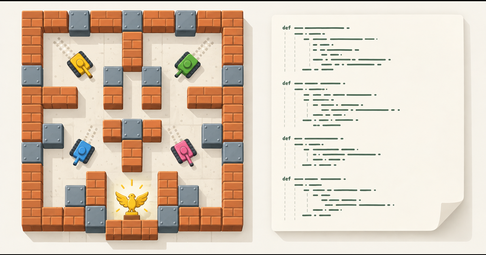

Battle City, decompiled.
Namco's 1985 tank game for the NES, taken apart two ways: the cartridge's program turned into readable, executable Python-like source you can edit in the browser, and a JavaScript Party Edition for up to four players with 33 modes.

Party Edition
A new engine built from what the decompilation revealed, using the original graphics and all 35 stages.
- Up to 4 players, keyboard and gamepads
- Classic campaign, co-op, deathmatch, team modes
- Five story campaigns and three two-player duos
The source that plays
The original game, running from decompiled source rather than from the cartridge's machine code.
- Read
game.pyfunction by function and follow its calls - Edit a function and recompile it in your browser
- Play the result straight away, 1 or 2 players
.nes, 24,592 bytes). It is checked by its SHA-256 fingerprint, kept in your browser so you are asked only once, and never uploaded anywhere.How it works
The decompilation turned the cartridge's 6502 machine code into game.py, a constrained, Python-style language. It is not CPython and not Namco's original source. A dedicated compiler, bpyc.py, compiles it for an interpreter that runs inside a NES emulator (jsnes) in place of the original processor code, and the result was checked against the real ROM frame by frame in recorded scenarios. The source editor runs that very compiler in your browser through Pyodide.
The Party Edition is a separate, hand-written JavaScript engine. It takes the rules the decompilation exposed (spawn timing, enemy AI, scoring, the shovel and the eagle's ring) and reads the graphics, stage maps and enemy rosters from your ROM when the page starts. That is what makes four players possible: the original game only knows two.
Source code
Everything is on GitHub, MIT-licensed for the project's own code. The README explains how to run it locally and how the two parts fit together.